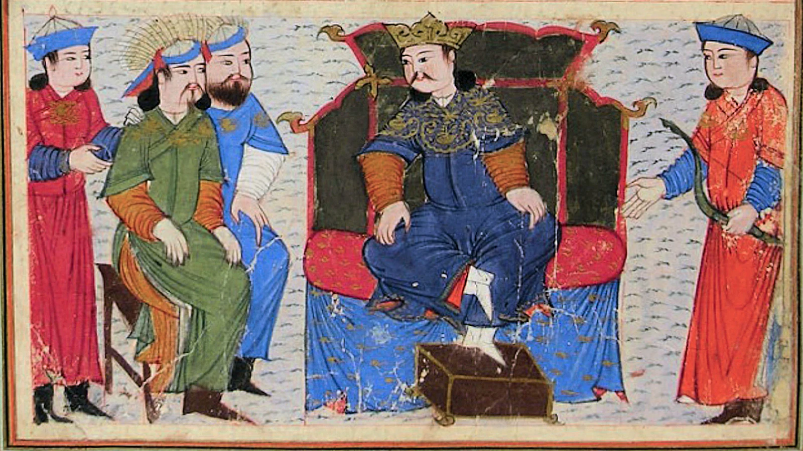
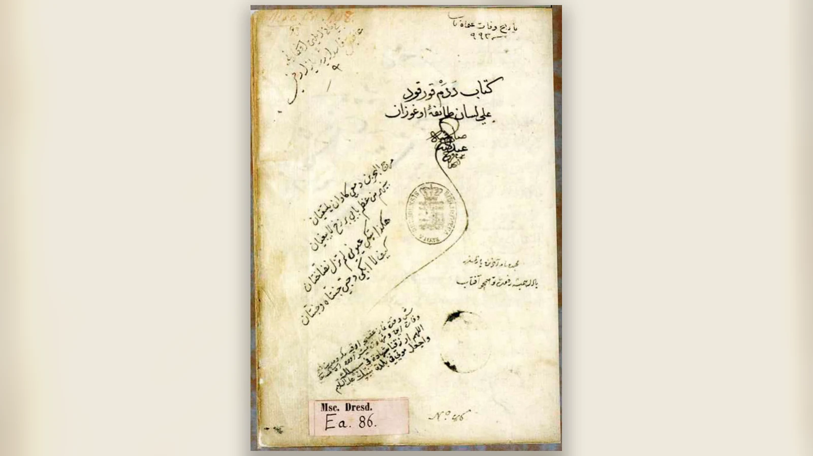
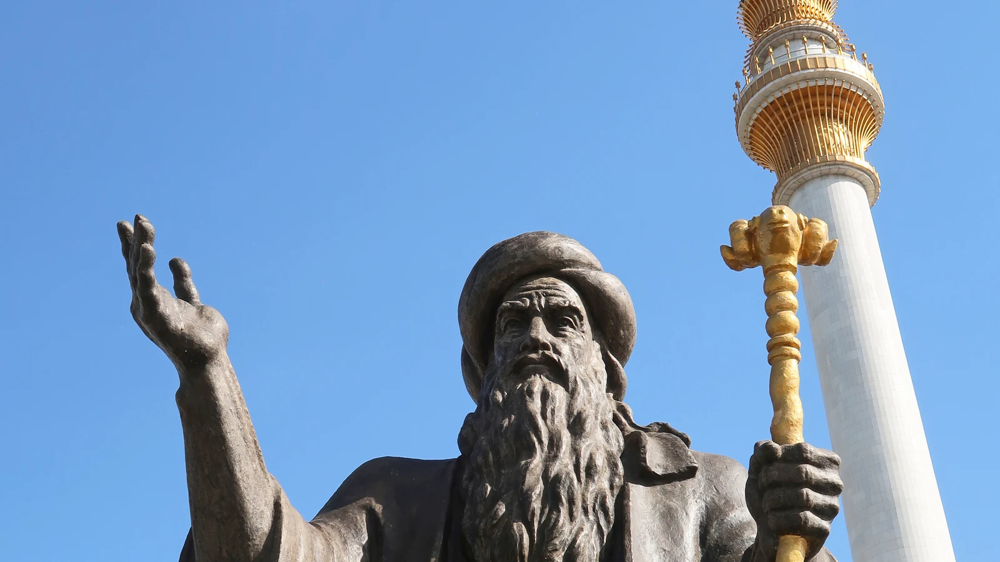
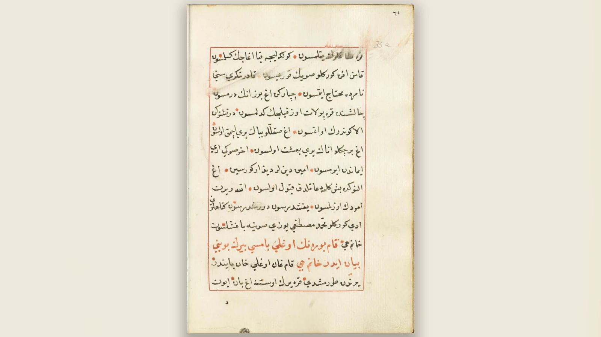
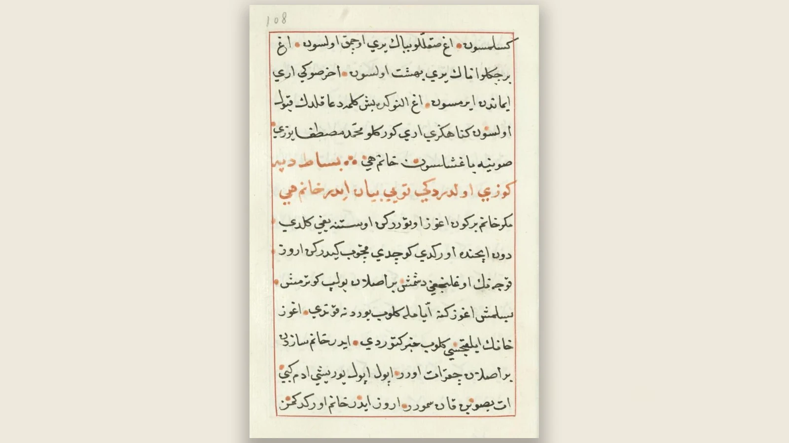
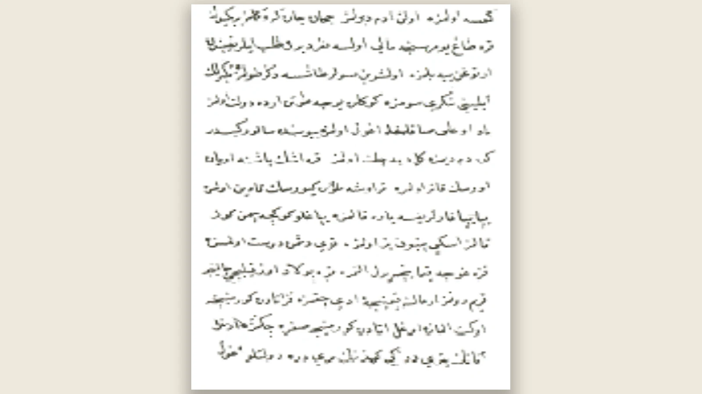
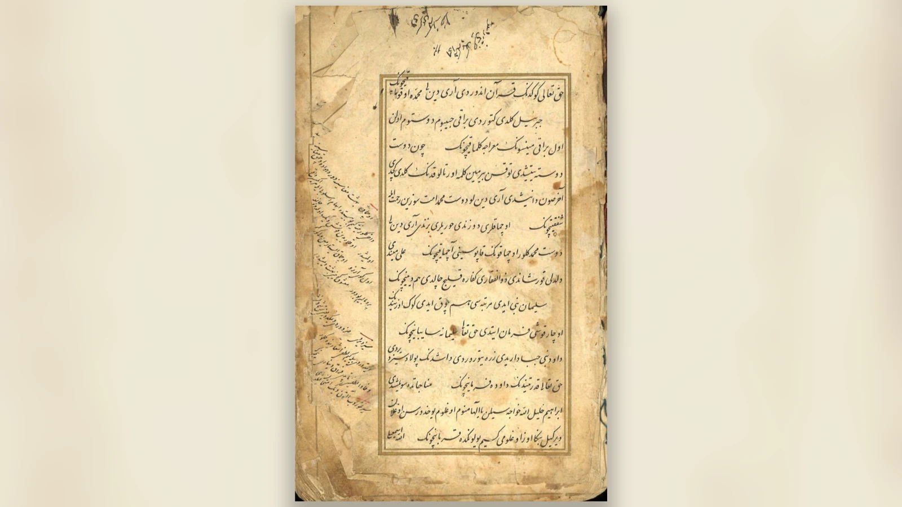
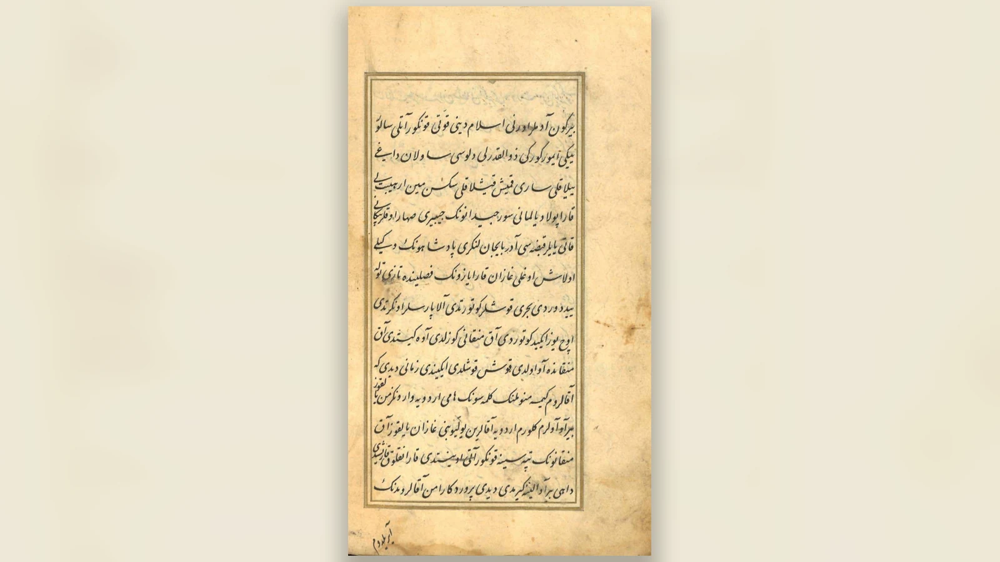

Dede Korkut Hikâyeleri, Oğuzların savaşlarını, aile ilişkilerini, tutsaklıklarını, kahramanlık anlayışlarını, inançlarını ve kendi içlerindeki çatışmaları anlatan birbirine bağlı destansı anlatılardır. En tanınmış metin tanığı olan Dresden yazması bir mukaddime ve 12 boy içerir. Bu yüzden “Dede Korkut’un 12 hikâyesi” ifadesi hâlâ kullanışlıdır; ancak bugün eserin kesin ve değişmez biçimde yalnız 12 hikâyeden oluştuğunu söylemek eksik kalır. Ankara, Günbed/Türkmen Sahra ve Bursa yazmalarının araştırmaya katılması, Dede Korkut metin geleneğinin tek bir yazmada donmuş olmadığını gösterdi.
Dede Korkut Kitabı modern anlamda tek bir yazarın baştan sona tasarladığı roman değildir; olaylar yaşanırken tutulmuş bir tarih kroniği de değildir. Anlatıların arkasında yüzyıllarca sözlü ortamda dolaşan Oğuz anlatıları vardır. Bunlar farklı dönemlerde değişmiş, yeni coğrafyalara uyarlanmış ve bugün bildiğimiz yazma biçimlerine kavuşmuştur. Bu yüzden metinde İslamî dualarla daha eski anlatı motifleri, Orta Asya hafızasıyla Kafkasya ve Doğu Anadolu coğrafyası, göçebe hayatın değerleriyle yazıya geçirildiği çağın izleri yan yana bulunur.
“Dede Korkut Hikâyeleri kaç tanedir?” sorusunun tek sayıyla cevaplanamamasının nedeni budur. Dresden’de 12 boy vardır; Vatikan bunların altısını aktarır; Ankara eksiktir. Günbed yazması Salur Kazan’ın ejderhayla mücadelesini içeren yeni bir anlatı getirir ve bunun “13. boy” sayılıp sayılmayacağı tartışmalıdır. Bursa yazması ise Dresden’le büyük ölçüde paraleldir ve filolojik karşılaştırmalar açısından son derece değerlidir.
Dede Korkut Hikâyeleri Nedir?

Dede Korkut Hikâyeleri Oğuzname geleneğinin en önemli yazılı tanıkları arasındadır. “Oğuzname”, Oğuzların kökeni, beyleri, savaşları, töreleri ve kahramanları çevresinde oluşan anlatı geleneğinin genel adıdır. Dede Korkut Kitabı bütün Oğuznameleri kapsamaz; bu geniş hafızanın belirli bir kolunu günümüze ulaştırır.
Eserde bağımsız anlatı birimlerine “boy” denir. Her boy kendi olay örgüsüne sahiptir; fakat aynı Oğuz dünyasının kahramanları farklı boylarda yeniden karşımıza çıkar. Salur Kazan bir anlatıda oğlunu kurtarırken başka bir anlatıda kendisi tutsak düşer. Bamsı Beyrek kendi boyunda uzun esaretten dönen kahramandır; son boyda ise Oğuzların iç siyasi çatışmasının kurbanı olur.
Metindeki ritmik ve şiirsel söyleyişlere “soy” veya “soylama” denir. Kahramanın meydan okuması, ağıtı, duası ya da yoğun duygusu bu bölümlerde düzyazıdan farklı bir ritim kazanır. “Ozan” anlatı ve müzik geleneğini taşıyan kişidir. Dede Korkut’un boyların sonunda verdiği dua ve iyi dilekler ise “yom” kavramıyla ilişkilendirilir.
Bu yapı eserin neden modern roman veya kısa hikâye ölçütleriyle açıklanamayacağını gösterir. Tekrarlanan kalıp sözler, dinleyiciye seslenişler, kahramanların soylamaları ve anlatıcının ritmi sözlü icranın izlerini taşır. Yazma, daha önce yaşayan anlatı dünyasının belirli bir zamanda kâğıda geçirilmiş tanığıdır.
Dresden yazmasının başlığı “Kitāb-ı Dedem Korkud alā lisān-ı tāife-i Oğuzān”dır. Mukaddimede Korkut Ata Oğuzların sorunlarını çözen ve danışılan bilge olarak tanıtılır. Atasözleri, dinî ifadeler ve toplumsal değerlendirmelerden sonra boylara geçilir. Bu düzen bile eserin yalnız savaş maceralarından oluşmadığını gösterir.
Dede Korkut Kimdir: Gerçek Bir Kişi mi, Anlatıcı mı?

Dede Korkut sürekli savaşan başkahraman değildir. Gücü ad vermek, öğüt vermek, anlaşmazlık çözmek, evliliklerde aracılık etmek ve yaşanan olayı sözlü hafızaya dönüştürmektir. Boyların sonunda kopuzuyla belirip dua etmesi, onu anlatı dünyasının hafıza figürü hâline getirir.
Boğaç Han boyunda bu işlev açıktır. Genç kahraman boğayı yendikten sonra Dede Korkut gelir ve ona Boğaç adını verir. Ad burada sıradan isim değildir; başarının toplum tarafından tanınması ve gencin yeni statüsünün ilanıdır.
Dede Korkut’un tarihsel olarak tek bir kişi şeklinde yaşadığını kanıtlayan çağdaş belge yoktur. Farklı Türk topluluklarında Korkut Ata çevresinde gelişen mezar, makam, soy ve efsane gelenekleri figürün geniş bir kültürel hafızaya sahip olduğunu gösterir; fakat bunlardan kesin biyografi çıkarılamaz.
Bazı geleneklerde peygamber dönemine yakın yaşayan bilge, bazılarında ozan, veli veya eski inançlarla ilişkilendirilen kişi olarak yorumlanır. Onu kanıtlanmış peygamber, şaman ya da belirli hükümdarın veziri ilan etmek güvenli değildir. Metindeki sağlam portre; ad veren, öğüt veren, uzlaştıran, anlatan ve dua eden bilgedir.
Dede Korkut Hikâyeleri Kaç Tanedir?
Klasik cevap 12’dir; çünkü Dresden yazmasında mukaddimenin ardından on iki boy vardır. Okullarda kullanılan “Dede Korkut’un 12 hikâyesi” listesi buradan gelir.
Vatikan yazması mukaddime ve altı boy içerir. Ankara yazması 11 yapraklık, sondan eksik bir metindir; mukaddime ile Dirse Han Oğlu Boğaç Han anlatısının başlangıcını taşır. Mustafa S. Kaçalin tarafından Türk Tarih Kurumu Kütüphanesi’nde tespit edilmiş ve 2017’de yayımlanmıştır.
Günbed/Türkmen Sahra yazması İran’ın Türkmen Sahra-Günbed çevresiyle ilişkilidir. 31 yapraklık metindeki Salur Kazan’ın ejderhayı öldürmesini anlatan bölüm 2019’dan itibaren “13. boy” adıyla büyük ilgi gördü. Metin Ekici bunu “Salur Kazan’ın Yedi Başlı Ejderhayı Öldürmesi” başlığıyla 13. boy olarak yayımladı; ancak yazmanın boy ve soylama yapısı konusunda bütün araştırmacılar aynı sınıflandırmayı benimsemedi.
Bursa yazmasının varlığı 2022’de duyuruldu. Metin Dresden’le büyük ölçüde paraleldir; harekeli oluşu tartışmalı kelimelerin okunmasında önemlidir. Sadettin Özçelik’in kapsamlı Bursa yazması çalışması TDK tarafından 2026’da yayımlandı. Güncel araştırmalarda bilinen beş yazma Dresden, Vatikan, Ankara, Günbed ve Bursa’dır.
Dolayısıyla “Dresden yazmasında kaç boy vardır?” sorusunun cevabı kesin biçimde 12’dir. “Bütün Dede Korkut geleneği kaç bağımsız boydan oluşur?” sorusu ise yeni yazmalar nedeniyle daha karmaşıktır.
Dede Korkut Hikâyelerinin Konuları ve Kahramanları
| Sıra | Hikâyenin adı | Başlıca kahramanlar | Temel konu |
|---|---|---|---|
| 1 | Dirse Han Oğlu Boğaç Han | Dirse Han, Boğaç, annesi, Dede Korkut | Çocuksuzluk, ad kazanma, iftira, baba-oğul çatışması |
| 2 | Salur Kazan’ın Evinin Yağmalandığı Boy | Salur Kazan, Burla Hatun, Uruz, Karacık Çoban | Baskın, tutsaklık, aile ve yurdun kurtarılması |
| 3 | Bay Büre Bey Oğlu Bamsı Beyrek | Beyrek, Banu Çiçek, Yaltacuk | Evlilik, sınanma, uzun esaret ve dönüş |
| 4 | Kazan Bey Oğlu Uruz Bey’in Tutsak Olduğu Boy | Kazan, Uruz, Burla Hatun | Savaş deneyimi, tutsaklık, baba-oğul ilişkisi |
| 5 | Duha Koca Oğlu Deli Dumrul | Deli Dumrul, eşi, anne-babası, Azrail | Ölüm, aile bağları, ilahi irade |
| 6 | Kanlı Koca Oğlu Kan Turalı | Kan Turalı, Selcen Hatun | Eş seçimi, sınav ve karşılıklı kahramanlık |
| 7 | Kazılık Koca Oğlu Yigenek | Yigenek, Kazılık Koca | Tutsak babanın kurtarılması |
| 8 | Basat’ın Tepegöz’ü Öldürdüğü Boy | Basat, Tepegöz, Aruz Koca | Toplumu tehdit eden canavarın yenilmesi |
| 9 | Begil Oğlu Emren | Begil, Emren | İtibar, baba-oğul dayanışması |
| 10 | Uşun Koca Oğlu Segrek | Segrek, Eğrek | Kardeşlik ve tutsak ağabeyi kurtarma |
| 11 | Salur Kazan’ın Tutsak Olup Oğlu Uruz’un Çıkardığı Boy | Kazan, Uruz | Oğlun babayı kurtarması |
| 12 | İç Oğuz’a Dış Oğuz’un Asi Olup Beyrek’in Öldüğü Boy | Kazan, Aruz, Beyrek | Siyasi bölünme, sadakat ve ölüm |
Dirse Han Oğlu Boğaç Han
Bayındır Han’ın şöleninde çocuğu olmayan Dirse Han kara otağa oturtulur ve toplumsal aşağılanmayla karşılaşır. Eve döndüğünde öfkesini eşine yöneltir; kadın ise büyük bir toy vermesini, açları doyurmasını ve dua istemesini önerir. Sonunda oğulları olur. Çocuksuzluk böylece özel aile meselesinden toplumsal itibar sorununa dönüşür.
Çocuk büyüyünce Bayındır Han’ın güçlü boğasını öldürür. Dede Korkut ona Boğaç adını verir. Boğaç’ın yükselişi Dirse Han’ın kırk yiğidini kıskandırır; babayla oğul arasına iftira sokarlar. Dirse Han avda oğlunu okla yaralar.
Anlatının çözümünde Boğaç’ın annesi belirleyicidir. Oğlunu arar, bulur ve iyileşmesine yardım eder. Boğaç daha sonra babasını esir alan hainleri yenip Dirse Han’ı kurtarır. Böylece ad kazanmak fiziksel hünerle başlar; kahramanlık aile düzenini onarmakla tamamlanır.
Salur Kazan’ın Evinin Yağmalandığı Boy
Salur Kazan beylerle ava çıktığında yurdu saldırıya uğrar. Evi yağmalanır; annesi, Burla Hatun ve Uruz tutsak edilir. Hikâye savaşçı beyin dışarıdaki gücüyle evini koruma sorumluluğu arasındaki gerilimi gösterir.
Karacık Çoban toplumsal hiyerarşinin tepesinde değildir; buna rağmen düşmana karşı olağanüstü direnç gösterir. Onu yalnız yardımcı karakter saymak, boyun kahramanlık anlayışını daraltır.
Burla Hatun da pasif tutsak değildir. Düşmanın kimliğini açığa çıkarmaya çalıştığı sahnelerde Uruz’la birlikte ağır bir onur ve yaşam ikilemiyle karşılaşır. Kazan’ın ailesini kurtarması kaybedilen evin yanında siyasi otoritenin de yeniden kurulmasıdır.
Bay Büre Bey Oğlu Bamsı Beyrek

Bamsı Beyrek boyu aşk, ad kazanma, evlilik, esaret ve dönüşü birleştirir. Beyrek ile Banu Çiçek daha doğmadan birbirlerine adanır. Büyüdüklerinde Banu Çiçek onu ata binme, ok atma ve güreş gibi alanlarda sınar. Böylece kadın karakter bekleyen sevgiliye indirgenmez.
Düğün gerçekleşmeden Beyrek tutsak edilir. Dresden geleneğinde esaret on altı yıl sürer. Yaltacuk onun öldüğünü söyleyerek Banu Çiçek’le evlenmeye çalışır. Beyrek uzun yokluğun ardından kimliğini gizleyerek döner ve hileyi bozar.
Beyrek’in anlatısı üçüncü boyla bitmez. Son boyda İç Oğuz-Dış Oğuz çatışmasının ortasında yeniden görünür ve Kazan’a sadakatinden vazgeçmediği için öldürülür. Bu devamlılık boyların birbirinden kopuk masallar olmadığını gösterir.
Kazan Bey Oğlu Uruz Bey’in Tutsak Olduğu Boy
Uruz soylu bir ailenin oğludur fakat savaş deneyimi yoktur. Kazan oğlunun henüz baş kesip kan dökmediğini söyler; Uruz ise hünerin babadan görülerek öğrenileceğini hatırlatır. Baba oğlunu savaşa götürür.
Deneyim kazandırma girişimi Uruz’un tutsak düşmesiyle krize dönüşür. Kazan onu kurtarmaya çalışırken Burla Hatun da etkin biçimde olaylara katılır. Savaş eğitimi bütün aileyi etkileyen sınava dönüşür.
Boyun temel gerilimi soy ile kazanılmış kahramanlık arasındadır. Uruz’un doğumu ona statü verir; kahramanlığı ise eylemle doğrulanmalıdır. Baba da oğluna örnek olmanın bedeliyle karşılaşır.
Duha Koca Oğlu Deli Dumrul
Deli Dumrul kuru çay üzerine köprü kurup geçenden para alan, geçmeyenden daha fazla isteyen ölçüsüz bir yiğittir. Bir gencin öldüğünü duyunca Azrail’e meydan okur. Fakat karşısındaki güç sıradan savaşçı değildir.
Azrail canını almaya geldiğinde Dumrul bağışlanmak ister. Yerine başka bir can bulması şartıyla fırsat verilir. Anne ve babası oğullarını sevdiklerini söyleseler de kendi canlarını vermeyi reddeder.
Dumrul’un eşi onun yerine ölmeye razı olur. Dumrul bu fedakârlık karşısında eşinden vazgeçmek istemez ve ikisinin birlikte yaşaması ya da ölmesi için dua eder. İlahi irade onların ömrünü uzatır.
Hikâyeyi “kibirli adam cezalandırıldı” diye özetlemek eksiktir. Fiziksel kahramanlık ölüm karşısında anlamını kaybeder; eş sevgisi ve fedakârlık Dumrul’un değer dünyasını değiştirir.
Kanlı Koca Oğlu Kan Turalı
Kan Turalı kendisine denk, gerektiğinde onu savunabilecek bir eş ister. Selcen Hatun’la evlenebilmek için ağır sınavlardan geçer ve güçlü hayvanlarla mücadele eder.
Selcen Hatun ise ödül gibi bekleyen prenses değildir. Dönüş yolundaki saldırıda savaşır ve Kan Turalı’nın kurtuluşunda etkin rol oynar. Bu başarı erkek kahramanın gururunu da sınar.
Hikâye evlilikte denkliği öne çıkarırken kahramanlık ününün ilişkiyi tehdit edebileceğini de gösterir. Selcen’in savaşçılığı Dede Korkut kadınlarının hareket alanını açık biçimde ortaya koyar.
Kazılık Koca Oğlu Yigenek
Kazılık Koca seferde tutsak düşer. Yigenek babasının durumunu bilmeden büyür; gerçeği öğrendiğinde onu kurtarmak kendi kimliğinin ve aile sorumluluğunun parçasına dönüşür.
Oğul önceki kuşağın tamamlayamadığı işi üstlenir. Kurtarma yalnız sevgi değildir; aile şerefini ve bütünlüğünü yeniden kurar. Yigenek, Dede Korkut’ta oğulluğun pasif soy bağı olmadığını gösteren kahramanlardandır.
Basat’ın Tepegöz’ü Öldürdüğü Boy

Tepegöz bir çobanın peri kızıyla ilişkisinden doğar. Oğuzların arasında büyütülmeye çalışılır fakat kontrol edilemeyen şiddeti nedeniyle topluluğu tehdit eden insan yiyen bir varlığa dönüşür.
Basat da olağandışı geçmişe sahiptir: çocukken kaybolmuş ve aslan tarafından büyütülmüştür. Tepegöz toplum içinde büyüyüp toplum dışına yönelirken Basat doğada büyüyüp toplumu kurtarır. Bu terslik boyun derin yapısını oluşturur.
Tek göz, mağara ve kör etme motifleri Homeros’un Polyphemos anlatısıyla benzerlik gösterir. Ancak doğrudan kopyalama yönü kanıtlanmış değildir. Ortak motif dolaşımı, kültürel temas ve bağımsız gelişme ihtimalleri ayrı değerlendirilmelidir.
Begil Oğlu Emren
Begil’in itibarı konusunda yaşadığı kırgınlık onu siyasi merkezden uzaklaştırır. Avda yaralanması düşman için fırsat yaratır. Oğlu Emren babasının atını ve silahlarını alıp onun yerine savaşır.
Emren’in başarısı yalnız genç kahramanın yükselişi değildir; babasının zedelenen itibarını da onarır. Soyun verdiği statü yeni kuşağın eylemiyle yeniden doğrulanır.
Uşun Koca Oğlu Segrek
Eğrek tutsak düştüğünde Segrek uzun süre bundan habersiz büyür. Gerçeği öğrenince ağabeyini kurtarmayı görev edinir. Ailesi onu evlendirerek yolundan çevirmeye çalışsa da çözülmemiş aile borcunu bırakmaz.
Buradaki gerilim yeni kurulan aile ile doğduğu soy arasındadır. Segrek kardeşlik görevini tamamlamadan yeni hayatına geçmeyi kabul etmez. Sonunda kardeşler kavuşur ve ailedeki eksiklik giderilir.
Salur Kazan’ın Tutsak Olup Oğlu Uruz’un Çıkardığı Boy
Bu boy önceki Kazan-Uruz ilişkisini tersine çevirir. Daha önce Uruz tutsak olmuş ve babası onu kurtarmıştı; bu kez tutsak olan Kazan’dır.
Uruz artık deneyimsiz oğul değildir. Babasını kurtarabilecek savaşçıya dönüşmüştür. Böylece farklı boylar arasında modern romanlardaki kadar kesintisiz olmasa da anlamlı bir kuşak gelişimi görülür.
İç Oğuz’a Dış Oğuz’un Asi Olup Beyrek’in Öldüğü Boy
Son boyda tehdit dışarıdan değil Oğuzların içinden gelir. Yağma ve paylaşım düzenindeki kırılma siyasi sadakati bozar; Dış Oğuz isyan eder.
Aruz, Beyrek’i kendi tarafına çekmek ister. Beyrek Kazan’a bağlılığından vazgeçmez ve öldürülür. Uzun tutsaklıktan dönüp düğününe kavuşan kahramanın Oğuzların iç çatışmasında ölmesi anlatıya ağır bir siyasi son verir.
Kazan isyanı bastırır fakat düzen bedelsiz onarılmaz. Tepegöz gibi dışımsı canavar yenilebilirken toplumun kendi paylaşım ve sadakat düzeninin bozulması en sevilen kahramanlardan birinin kaybına yol açar.
Dede Korkut Hikâyelerinin Başlıca Kahramanları
Bayındır Han siyasi hiyerarşinin tepesindeki hükümdardır; şölenler onun çevresinde düzenlenir. Buna rağmen olayların etkin kahramanı çoğu kez Salur Kazan’dır. Kazan savaşır, ailesini kurtarır, oğluyla sınanır, tutsak düşer ve son boydaki siyasi bölünmenin merkezinde yer alır.
Burla Hatun aile ve siyasi düzenin güçlü figürüdür. Uruz ilk başta deneyimsiz oğulken zamanla babasını kurtaran kahramana dönüşür. Bamsı Beyrek ad kazanma, aşk, esaret, dönüş ve siyasi sadakat temalarının kesiştiği kişidir. Banu Çiçek onun edilgen ödülü değil, yeteneklerini sınayan eşidir.
Boğaç ve Dirse Han güvenin kırılması ve onarılmasını; Karacık Çoban soyluluk dışında da kahramanlık mümkün olduğunu; Deli Dumrul fiziksel gücün ölüm karşısındaki sınırını; Basat toplumun sınırından dönüp toplumu kurtarmayı temsil eder.
Kan Turalı ve Selcen Hatun eş seçiminde denklik ve gurur gerilimini gösterir. Yigenek, Segrek ve Emren ise farklı biçimlerde aile sorumluluğunu üstlenen genç kuşaktır. Karakterler “iyi-kötü” listesi değildir; itibar, sadakat, soy ve toplumsal görev üzerinden sınanırlar.
Dede Korkut Hikâyelerinde Kadın Kahramanlar
Dede Korkut kadınlarını tek tipe indirgemek mümkün değildir. Mukaddimedeki kadın sınıflandırmaları ataerkil değerleri açıkça taşırken boylardaki kadınlar çoğu kez olay örgüsünün etkin aktörleridir. İki durumu birlikte görmek gerekir.
Burla Hatun tutsaklık ve savaş anlarında karar veren, oğlunun hayatıyla siyasi onur arasında ağır tercihlerle karşılaşan figürdür. Banu Çiçek Beyrek’le at, ok ve güreşte yarışır. Selcen Hatun doğrudan savaşır ve Kan Turalı’nın hayatını kurtarır.
Boğaç’ın annesi oğlunu arayıp bulur ve iyileştirir. Deli Dumrul’un eşi ise savaşçı değildir ama canını vermeyi kabul ederek anlatının ahlaki merkezine yerleşir.
Bu kadınları doğrudan “feminist kahramanlar” ilan etmek tarihsel bağlamı bugünün kavramlarıyla düzleştirir. Daha sağlam sonuç, ataerkil savaşçı toplum tasvirine rağmen kadınların yalnız dekoratif ve pasif rollerle sınırlandırılmadığıdır.
Hikâyelerin Ortak Temaları ve Gerçek Anlamları
Ad kazanmak toplumsal onaydır. Boğaç hüner gösterir; Dede Korkut bu başarıyı adla kalıcılaştırır. Soy önemlidir ama tek başına yeterli değildir. Kahramanın statüsü eylemle doğrulanır.
Babalık ve oğulluk sürekli sınanır. Dirse Han oğluna güvenmeyerek felakete yol açar; Kazan oğlunu savaşa hazırlarken onu kaybetme tehlikesi yaşar; Uruz daha sonra babasını kurtarır. Yigenek ve Emren de önceki kuşağın eksikliğini tamamlar.
Tutsaklık çok sık tekrar eder. Beyrek, Uruz, Kazılık Koca, Eğrek ve Kazan farklı boylarda esaret yaşar. Tutsak kişinin kurtarılması yalnız bireysel sevgi değil, eksilen aile ve topluluğun yeniden bütünleşmesidir.
Sadakat son boyda siyasi niteliğini açıkça gösterir. Beyrek’in ölümü, bağlılığın bedelini ortaya koyar. İç Oğuz-Dış Oğuz çatışması en büyük tehdidin her zaman dışarıdan gelmediğini kanıtlar.
Av, şölen ve yağma da dekor değildir. Şölen kimin nereye oturduğunu ve hangi payı aldığını görünür kılar. Servetin dağıtılması bağlılığı yeniler. Son boydaki paylaşım krizi bu nedenle basit ziyafet tartışması değil siyasi düzenin bozulmasıdır.
At, kahramanın hareketliliği ve savaşçı kimliğinin parçasıdır. Sınır coğrafyası ise Gürcistan, Trabzon ve kaleler çevresindeki düşman tasvirlerini biçimlendirir. Bunları belirli savaşların tutanağı gibi okumak yerine gerçek coğrafyanın destansı hafızaya dönüşümü olarak değerlendirmek gerekir.
Ölüm Deli Dumrul’da doğrudan, Beyrek’te siyasi biçimde karşımıza çıkar. Dede Korkut’un boy sonlarında faniliği hatırlatması zafer anlatılarının üstüne sürekli bir ölüm bilinci yerleştirir.
Basat “toplum dışından gelip toplumu kurtaran” kahramandır. Aslanlar arasında büyümüş olmasına rağmen Oğuz düzenini seçer. Tepegöz ise Oğuzların arasında büyütülmesine rağmen toplumu yok etmeye yönelir. İnsan ile canavar arasındaki sınır böylece yalnız doğumla değil davranış ve toplumsal bağlılıkla kurulmuş görünür.
Şölen, Yağma ve Paylaşım Neden Bu Kadar Önemli?
Bayındır Han ve Salur Kazan’ın şölenleri Oğuz hiyerarşisini görünür hâle getirir. Kimin nereye oturduğu, kimin çağrıldığı ve kimin ne aldığı siyasi konumun işaretidir. Dirse Han’ın çocuğu olmadığı için kara otağa oturtulması bunun en açık örneğidir.
“Yağma” modern anlamda sıradan talan gibi okunmamalıdır. Kazan’ın evini beylerine yağmalatması servetin bağlılar arasında dağıtıldığı geleneksel paylaşım düzenidir. Son boyda Dış Oğuz’un bu sistemin dışında kalması siyasi kopuşa dönüşür.
Bey yalnız savaşta güçlü olduğu için bey değildir; toy verebilmeli, mal dağıtabilmeli ve çevresini doyurabilmelidir. Güç, servetin dolaşıma sokulmasıyla meşrulaşır. Bu nedenle ekonomik paylaşım ile siyasi sadakat birbirinden ayrı değildir.
Av da savaşçı yetenekleri ve beyler arası birlikteliği gösterir. Fakat Kazan’ın evinin yağmalanması boyunda av için yurdu terk etmek felaketin başlangıcıdır. Seçkin erkek dünyasının prestij faaliyeti, evin savunmasız kalmasıyla tersine çevrilir.
Tutsaklık Teması Neden Sürekli Tekrarlanıyor?
Sınır bölgelerinde yaşayan savaşçı toplumlar için esir alma, fidye, baskın ve kurtarma tarihsel hayatın gerçek parçalarıydı. Dede Korkut bu tecrübeyi destansı kimlik sınavına dönüştürür.
Tutsak kahraman ölmemiştir fakat toplumdan kopmuştur. Beyrek’in yokluğunda Yaltacuk boşluğu kullanır; Yigenek babasız büyür; Segrek ağabeyinin varlığını sonradan öğrenir. Esaret geride kalanların hayatını da değiştirir.
Kurtarma görevlerinin genç kuşağa geçmesi kahramanlık eğitiminin bir biçimidir. Oğul babanın, kardeş kardeşin yarım kalmış hikâyesini tamamlar. Böylece kahramanlık yalnız düşmanı yenmek değil, kopmuş bağı yeniden kurmaktır.
Dede Korkut’ta Ad, Ün ve Toplumsal Kimlik
Kahramanlar sık sık soylarıyla tanıtılır: Dirse Han oğlu, Kanlı Koca oğlu, Uşun Koca oğlu. Soy bireye başlangıç kimliği verir; kişisel ün ise eylemle kazanılır.
Sözlü kültürde kişinin yaptığı iş anlatıya dönüştüğünde kalıcılaşır. Dede Korkut’un boy sonunda gelip yaşananlara ad vermesi, kahramanlığı toplumsal hafızaya kaydeder. Ozan bu anlamda yalnız eğlendiren kişi değil, hangi davranışın hatırlanacağını belirleyen kültürel otoritedir.
Beyrek’in ölümü bunun tersinden örneğidir. Önceki başarıları ve sadakati bilindiği için son boydaki ölümü sıradan kayıp olmaktan çıkar. Ün, kahramanın ölümünden sonra bile anlatının siyasi ve duygusal ağırlığını belirler.
Dede Korkut Hikâyelerinde Eski Türk İnançları ve İslam
Metinde Allah’a dua, peygamber, namaz, Azrail ve kader anlayışı açık biçimde bulunur. Deli Dumrul boyu ölüm meleği üzerinden doğrudan İslamî çerçeve kurar. Mukaddime de güçlü İslamî ifadeler taşır.
Bunun yanında peri kızı, Tepegöz’ün olağanüstü doğumu, rüya, dağ, su ve ağaç sembolizmi, ad verme ve daha eski sözlü kültür motifleri vardır. Bunların tamamını otomatik olarak “şamanizm kalıntısı” saymak doğru değildir.
Katmanlılığın daha sağlam açıklaması sözlü aktarım sürecidir. Oğuz anlatıları farklı dönemlerde yeni dinî ve siyasi dünyalara uyarlanmış; Müslüman anlatıcılar daha eski kahramanlık motiflerini kendi kavramlarıyla yeniden anlamlandırmış olabilir.
Bu nedenle “hikâyeler tamamen İslamiyet öncesidir” veya “tamamen İslamîdir” şeklindeki iki uç da yetersizdir. Daha eski Oğuz hafızası ile Müslüman Oğuz anlatı çevresinin değerleri aynı yapıda birleşmiştir.
Dede Korkut Hikâyeleri Nerede ve Ne Zaman Geçer?
Dede Korkut için tek tarih vermek sözlü çekirdeği, anlatıların biçimlenmesini ve yazmaların istinsahını birbirine karıştırır. Oğuzların Orta Asya ve Siriderya çevresindeki eski tarihleri anlatı hafızasının gerisinde bulunabilir. Mevcut boyların coğrafyası ise Kafkasya, Azerbaycan ve Doğu Anadolu’ya belirgin biçimde yaklaşır.
Bayburt, Trabzon ve Gürcistan çevresindeki yer ve düşman adları anlatıların batıya taşınmış Oğuz dünyasında yeniden biçimlendiğini gösterir. Akkoyunlu çağının siyasi-kültürel ortamı da geç katmanların açıklanmasında önemlidir.
Dresden yazması muhtemelen 16. yüzyıla aittir; SLUB Dresden daha eski bir örneğe dayanmış olabileceğini belirtir. Bu tarih, hikâyelerdeki olayların 16. yüzyılda yaşandığı anlamına gelmez.
Coğrafya da zaman gibi üst üste binmiştir. Eski Oğuz hafızası yeni sınır coğrafyasının kaleleri ve komşularıyla birleşmiştir. Eseri belirli devletin resmî tarih kitabı gibi okumak yerine farklı dönemlerin izlerini taşıyan hafıza ürünü olarak görmek gerekir.
Dede Korkut Nüshaları Neden Önemlidir?

Dede Korkut araştırmaları uzun süre Dresden ve Vatikan üzerinden yürüdü. Ankara, Günbed ve Bursa yazmalarının araştırmaya katılması yalnız nüsha sayısını artırmadı; tartışmalı kelimeleri ve anlatı yapısını karşılaştırmak için yeni imkân sağladı.
Dresden yazması, SLUB Dresden’de Mscr.Dresd.Ea.86 numarasıyla korunur. Resmî kütüphane kaydı 154 yaprak, siyah mürekkeple nesih yazı, tek müstensih ve kırmızı başlıklar bilgilerini verir. Mukaddime ve 12 boy içerir; muhtemelen 16. yüzyıla tarihlenir. Tepegöz bölümünün Heinrich Friedrich von Diez tarafından 1815’te yayımlanması Avrupa’daki tanınırlığında dönüm noktasıdır.
Vatikan yazması, “Hikâyet-i Oğuznâme-i Kazan Beg ve Gayri” başlığıyla bilinir; mukaddime ve altı boy içerir. Ettore Rossi tarafından 20. yüzyıl ortasında tanıtılmış ve yayımlanmıştır. Dresden’in mekanik kısaltması gibi değil, bağımsız metin tanığı olarak değerlendirilir.
Ankara yazması, Türk Tarih Kurumu Kütüphanesi’nde Yazma I/261 numarasıyla kayıtlıdır. Mustafa S. Kaçalin tarafından bulunan yazma 11 yapraktır, sondan eksiktir ve 2017’de yayımlanmıştır. Mukaddime ile Boğaç Han anlatısının başlangıcından bölüm içerir.
Günbed/Türkmen Sahra yazması, İran’ın Günbed şehri ve Türkmen Sahra bölgesiyle ilişkilidir. Veli Muhammed Hoca’nın özel kütüphanesinde tanınan 31 yapraklık metin nestalik yazıyla yazılmıştır ve baş tarafı eksiktir. Dil özellikleri ve haşiyeler üzerinden özellikle 18. yüzyıl çevresinde tarihlendirme görüşleri ileri sürülmüştür.
Bursa yazması, 2022’de Ersen Ersoy’un paylaştığı sayfalarla kamuoyuna duyuruldu. Dresden’le büyük ölçüde paraleldir ve 12 boyu taşır. Harekeli oluşu filolojik açıdan önemlidir. Bursa Büyükşehir Belediyesi tıpkıbasımı 2022’de yayımladı; Sadettin Özçelik’in kapsamlı Bursa yazması çalışması TDK tarafından 2026’da yayımlandı.
Bu beş yazma “beş ayrı gerçek Dede Korkut” değildir. Her biri metin geleneğinin başka anda sabitlenmiş tanığıdır. Bazıları aynı boyları farklı biçimlerde aktarır, bazıları eksiktir, Günbed ise repertuvara farklı malzeme ekler.
Dede Korkut Metinlerini Okurken Neden Nüsha Farklarını Bilmek Gerekir?
Modern okuyucu basılı tek kitap görür; fakat elimizde yazarın onayladığı “son nüsha” yoktur. Editörler farklı yazmaları karşılaştırarak metin kurar. Bu nedenle güvenilir iki yayındaki farklı kelime her zaman basit hata değildir.
Arap harfli tarihî Oğuzca metinlerde ünlülerin açık gösterilmemesi okuma sorunları yaratır. Bursa yazmasının harekeli oluşu bu açıdan önemlidir. Son filolojik çalışmalarda yıllardır yerleşmiş bazı kahraman adlarının okunması bile yeniden tartışılmıştır.
Ankara kısa ve eksik olsa da mukaddimeyi karşılaştırmaya yardım eder. Bursa, Dresden’deki sorunlu okumaları sınar. Günbed ise anlatı repertuvarının kapsamına yeni soru ekler. “Hangisi gerçek?” yerine “bu tanıklar birbirleriyle nasıl ilişkilidir?” sorusu daha verimlidir.
Dede Korkut Hikâyeleri Destan mı, Halk Hikâyesi mi?
Dede Korkut yalnız “destan” veya yalnız “halk hikâyesi” kutusuna sığmaz. Olağanüstü güç, savaşçı aristokrasi, topluluk kaderi ve büyük düşmanlar destansı özelliklerdir. Aşk, aile çatışması, bireysel duygular ve gelişmiş olay örgüsü ise halk hikâyesine yaklaşır.
Nazım-nesir karışımı yapı bu geçiş niteliğini güçlendirir. Olaylar çoğunlukla düzyazıyla ilerler; yoğun duygular ve meydan okumalar soylamalarda ritmikleşir. Tekrarlanan kalıplar sözlü icranın izidir.
Her boyun sonunda Dede Korkut’un ortaya çıkması anlatıyı toplumsal hafızaya bağlar. Zaferin ardından bile fanilik hatırlatılır. Bu yüzden “destanî hikâye” eserin ara niteliğini açıklamak için kullanışlıdır.
Dede Korkut’un Yeni Boyu: Salur Kazan ve Ejderha


Günbed yazmasının en çok ilgi çeken kısmı Salur Kazan’ın ejderhayla mücadelesidir. Metin Ekici 2019’daki yayında bunu “Salur Kazan’ın Yedi Başlı Ejderhayı Öldürmesi” adıyla 13. boy olarak değerlendirdi. Kamuoyundaki “13. hikâye bulundu” ifadesi buradan güç aldı.
Anlatının merkezinde Salur Kazan vardır. Ejderha motifi Türk, İran, Kafkasya ve daha geniş Avrasya anlatı dünyalarında yaygındır; tek bir kaynağa bağlanması kolay değildir.
Tartışma metnin nasıl bölümlendirileceğindedir. Günbed’deki soylamaların sayısı ve son anlatının bağımsız boy olarak sınıflandırılması konusunda farklı görüşler vardır. “13. boy” yaygın ve kullanışlı adlandırmadır fakat tartışmanın bittiği anlamına gelmez.
Günbed’in değeri sayı meselesinden büyüktür. Dresden ve Vatikan’da sabitlenmiş repertuvar dışında da Dede Korkut anlatılarının yaşamış olabileceğini somutlaştırır.
Dede Korkut Hikâyeleri Tarihsel Gerçekleri Anlatıyor mu?
Dede Korkut tarih için değerlidir fakat kronik değildir. Yer adları, siyasi hiyerarşi, şölen, av, evlilik, tutsaklık, hayvancılık ve komşu topluluklarla ilişkiler tarihsel hayatın izlerini taşır.
Buna karşılık Salur Kazan’ın her seferini belirli savaşla eşleştirmek veya Bamsı Beyrek’in tarihsel biyografisini çıkarmak mümkün değildir. Destan anlatıcısı olayları hafızada kalacak kalıplara dönüştürür.
Bayındır Han ve Salur Kazan gibi adların başka geleneklerde görünmesi tarihsel çekirdek tartışmasını güçlendirir; ancak aynı adın bulunması boydaki bütün olayların yaşandığını kanıtlamaz.
En sağlıklı yaklaşım tarihsel süreç, kolektif hafıza ve destansı kurguyu birbirinden ayırmaktır.
Tepegöz ile Polyphemos Arasında Bağlantı Var mı?
Tepegöz ile Homeros’un Odysseia’sındaki Polyphemos arasında tek gözlü insan yiyen dev, kapalı mekân ve gözün kör edilmesi gibi çarpıcı benzerlikler vardır. Karşılaştırma 19. yüzyıl başından beri yapılır.
Heinrich Friedrich von Diez 1815’te Tepegöz anlatısını yayımlarken Homeros bağlantısını güçlü biçimde savunmuştu. Fakat benzerliği görmek, aktarım yönünü kanıtlamak değildir. Tek gözlü dev motifi geniş coğrafyalarda dolaşabilir.
Anadolu, Kafkasya, İran ve Akdeniz birbirinden yalıtılmış kültür alanları değildi; aktarım mümkündür. Ancak yönü ve aracıyı gösterecek kesintisiz tarihsel zincir olmadan “biri diğerinden kesin kopyalandı” denemez.
Dede Korkut bağlamındaki önemli fark, Tepegöz’ün Oğuzların kendi toplumu içinde büyüyüp onu tehdit etmesidir. Basat’ın zaferi yalnız kişisel kaçış değil, bütün topluluğun kurtuluşudur.
Antik Bilge Yorumu: Dede Korkut Dünyasında Kahramanlık Ne Anlama Gelir?
On iki boy birlikte okunduğunda kahramanlık yalnız düşmanı yenmek değildir. Boğaç boğayı öldürerek ad alır ama asıl olgunluğu babasını hainlerden kurtarmasıyla görünür. Uruz önce deneyimsiz oğuldur, sonra babasını kurtarır. Yigenek babasını, Segrek ağabeyini kurtarır. Basat’ın zaferinin değeri Oğuz toplumunu yok oluştan korumasıdır.
Bu tekrarlar bireysel gücün toplumsal işlevle değer kazandığını düşündürür. Deli Dumrul başlangıçta gücünü meşru toplumsal amaç için kullanmaz; ölümle yüzleşmesi onun değer dünyasını değiştirir.
Felaketlerin önemli kısmı dış düşmandan başlamaz. Dirse Han’ın adamları kıskançlıkla baba-oğul ilişkisini bozar. Kan Turalı’nın gururu Selcen’le çatışma yaratır. İç Oğuz-Dış Oğuz bölünmesi paylaşım krizinden doğar. Tepegöz bile tamamen dışarıdan gelen istilacı değildir.
Bu nedenle temel gerilim “Oğuzlar ve düşmanları” karşıtlığından daha derindir. Ailede güven, beyler arasında paylaşım ve bireysel gurur toplumsal düzeni içeriden kırabilir.
Beyrek’in kaderi bunu en açık gösterir. İlk hikâyesinde dışarıdaki esaretten kurtulup topluma döner; son boyda onu öldüren yabancı düşman değil Oğuzların iç çatışmasıdır. Dışarıdan kurtarılan kahraman içeride kaybedilir.
Metinlerden çıkan ölçülü yorum şudur: Dede Korkut dünyasında kahramanlık hüner göstermek, bu hünerle toplumsal kimlik kazanmak ve gücü aile ile Oğuz düzeninin devamı için kullanmaktır. Bu, metnin açık bir doktrini değil boyların birlikte okunmasından çıkan sonuçtur.
Kadınların rolü de bu çerçevede anlam kazanır. Burla Hatun, Banu Çiçek, Selcen Hatun, Boğaç’ın annesi ve Dumrul’un eşi farklı biçimlerde aile ve toplumsal düzenin sürmesine katkıda bulunur. Kahramanlığı yalnız savaş meydanında baş kesmeye indirgemek bu rolleri görünmez kılar.
Son boy düzenin karanlık sonucunu gösterir. Paylaşım ve sadakat bozulduğunda Oğuz gücü kendi üzerine döner. Dış düşmanı yenebilen savaşçı kültür, siyasi birlik çözüldüğünde iç savaşa dönüşebilir.
Anlatı Dünyasını Bir Arada Tutan Yapı
Dede Korkut’un anlatı tekniğinde tekrar, sözlü kültürün zayıflığı değil hafıza aracıdır. Benzer girişler, at ve silah tasvirleri, kahramanın düşmana seslenişi ve boy sonundaki dua dinleyicinin anlatı yapısını tanımasını sağlar. Aynı kalıp farklı kahraman için kullanıldığında kişisel macera ortak Oğuz dünyasının parçasına dönüşür. Yazılı edebiyatta gereksiz tekrar gibi görülebilecek unsur, sözlü icrada ritim ve beklenti kurar.
Kahramanın ailesiyle ilişkisi de savaş kadar önemlidir. Birçok boyda genç erkeğin toplum içindeki konumu babasının varlığıyla başlar fakat babanın gölgesinde tamamlanmaz. Boğaç babasını kurtarır, Yigenek tutsak babasını geri getirir, Emren yaralı babasının yerini alır, Uruz sonunda Kazan’ı esaretten çıkarır. Bu örnekler soyun biyolojik devamlılıktan çok karşılıklı yükümlülük olarak tasarlandığını düşündürür.
Düşman figürlerinin anlatıdaki işlevi de tek biçimli değildir. Kaleler, tekürler ve sınır savaşları gerçek tarihsel coğrafyanın izlerini taşırken düşman çoğu zaman kahramanın hünerini görünür kılan anlatısal araçtır. Buna karşılık son boyda dış düşman geri çekilir ve Oğuz beyleri birbirine yönelir. Bu değişim, siyasi düzenin yalnız dışarıdan korunamayacağını; içeride paylaşım ve sadakatin de sürdürülmesi gerektiğini gösterir.
Dede Korkut’taki evlilikler romantik aşk anlatısından daha geniş toplumsal işleve sahiptir. Beyrek-Banu Çiçek ve Kan Turalı-Selcen Hatun örneklerinde eş seçimi kahramanlık, soy ve uygunluk ölçütleriyle birlikte yürür. Kadınların sınama ve savaş sahnelerinde etkin olması evliliği iki hanenin birleşmesinin yanında iki güçlü karakterin karşılaşmasına dönüştürür. Bununla birlikte nihai düzen yine aile ve soy devamı çevresinde kurulur.
Metindeki mizah ve abartı da kahramanlık dünyasının parçasıdır. Deli Dumrul’un kuru çay üzerine köprü kurması gibi sahneler gerçekçi davranış kaydı olarak okunamaz; karakterin ölçüsüzlüğünü birkaç güçlü hareketle görünür kılar. Destansı anlatı fiziksel gücü büyütür, tehlikeyi olağanüstüleştirir ve karakter özelliklerini keskinleştirir. Bu nedenle boylardan tarihsel veri çıkarırken edebî biçimin dönüştürücü etkisi sürekli hesaba katılmalıdır.
Yeni yazmaların bulunması Dede Korkut araştırmalarında metin tarihini yeniden düşünmeyi zorunlu kılmıştır. Uzun süre Dresden ve Vatikan arasındaki farklar temel karşılaştırma alanıyken Ankara, Günbed ve Bursa yeni kontrol noktaları oluşturdu. Özellikle paralel ifadelerin farklı yazımları, tarihî Oğuzcanın ses ve kelime özelliklerinin daha dikkatli çözülmesini sağlar. Bir nüshanın diğerinden daha geç olması onun otomatik olarak değersiz olduğu anlamına gelmez; geç tanık daha eski bir okuma geleneğinin izini koruyabilir.
Dede Korkut’un her boy sonunda görünmesi anlatıcı ile karakter arasındaki sınırı da ilginç hâle getirir. Olayların çoğunda merkezde değildir; fakat sonunda yaşananları adlandırarak anlatının sahibi gibi davranır. Böylece savaşçıların fiziksel başarısı ozanın sözüyle kalıcılık kazanır. Bu yapı, sözlü kültürde ün ile anlatı arasındaki bağı açık eder: yapılmış eylem ancak anlatıldığında kuşaklar arası hafızaya dönüşür.
Boylarda toplumsal düzen kusursuz gösterilmez. Kıskanç beyler, yanlış karar veren babalar, gururuna yenilen kahramanlar ve paylaşım yüzünden isyan eden gruplar vardır. Bu nedenle eser yalnız ideal Oğuz toplumunun övgüsü değildir; idealin hangi noktalarda bozulabileceğini de gösterir. Kahramanın görevi bazen dış düşmanı yenmekten çok bu bozulmanın açtığı yarayı kapatmaktır.
Dede Korkut’un günümüzde okul metnine dönüşmesi, anlatıların karmaşıklığını zaman zaman azaltmıştır. Kısa özetler olay sırasını öğretir fakat neden aynı temaların tekrarlandığını açıklamaz. Oysa tutsaklık, ad kazanma, baba-oğul ilişkisi ve paylaşım birlikte okunduğunda boyların ortak bir toplumsal mantık kurduğu görülür. Bu nedenle eseri anlamanın yolu on iki hikâyeyi birbirinden bağımsız ahlak dersleri olarak değil, aynı dünyanın farklı krizleri olarak okumaktır.
Kahramanlar Aynı Anlatı Dünyasında Nasıl Birbirine Bağlanır?
Dede Korkut boyları ayrı ayrı okunabilse de karakter kadrosu bunları tek bir anlatı dünyasına bağlar. Bayındır Han siyasal düzenin tepesinde yer alır; şölen düzenler, beyleri toplar ve topluluğun hiyerarşisini görünür kılar. Salur Kazan ise bu düzenin sahadaki en etkin kişisidir. Evi yağmalanır, oğlu tutsak düşer, kendisi esir edilir ve son boydaki İç Oğuz-Dış Oğuz çatışmasının merkezinde bulunur. Bu tekrarlar aynı kişinin değişmez bir kahraman kalıbı olarak sunulmasından çok, iktidarın farklı krizlerde sınanmasını sağlar.
Genç kahramanların hikâyeleri de birbirini tamamlar. Boğaç, Beyrek, Uruz, Yigenek, Emren ve Segrek farklı ailelerden gelseler de toplumsal kabulü hazır biçimde elde etmez. Boğaç boğayı yenerek ad alır; Beyrek bezirgânları kurtardıktan sonra tanınır; Uruz savaş tecrübesinin eksikliğiyle yüzleşir; Yigenek ve Segrek tutsak yakınlarını kurtararak aile içindeki sorumluluklarını yerine getirir. Soylu doğum önemli olsa da kahramanın değerini görünür kılan şey eylemdir. Bu nedenle ad, ün ve soy arasında sürekli bir alışveriş vardır: soy kahramana başlangıç konumu verir, hüner ise o konumu hak edilmiş statüye dönüştürür.
Aynı karakterin farklı boylarda değişen konumu, eserin basit bir kahramanlar kataloğu olmadığını gösterir. Uruz önce deneyimsiz ve kurtarılması gereken oğuldur; daha sonra babası Kazan’ı esaretten çıkarır. Beyrek kendi boyunda ölümü aşıp düğününe dönen kahramanken son boyda sadakatinden vazgeçmediği için öldürülür. Bu dönüşümler, anlatıların tek bir zamanda ve tek bir planla kurulmuş olmasını kanıtlamaz; fakat anlatıcıların ortak karakter hafızasını kullanarak boylar arasında anlam ilişkileri kurduğunu gösterir.
Kadın kahramanlar da bu ağın dışına yerleştirilmez. Burla Hatun hem Kazan’ın ailesinin hem de Oğuz siyasi düzeninin krizlerinde görünür. Banu Çiçek ile Selcen Hatun, eş seçiminin edilgen nesneleri olmaktan çok kahramanı sınayan ve gerektiğinde onunla birlikte savaşan kişilerdir. Boğaç’ın annesi oğlunun iyileşmesini sağlayarak baba ile oğul arasındaki kopuşun onarılmasına öncülük eder. Karakterler arasındaki bağ böylece yalnız erkekler arası savaş ortaklığıyla değil; evlilik, annelik, kardeşlik, sadakat ve karşılıklı kurtarma görevleriyle kurulur.
Sözlü İcra, Kopuz ve Soylamalar Metnin Anlamını Nasıl Değiştirir?
Dede Korkut Kitabı bugün çoğunlukla sessizce okunan bir yazılı eser olsa da anlatım biçimi sesli icranın izlerini korur. “Hanım hey” gibi dinleyiciye yönelen seslenişler, olayın ortasında başlayan ritmik konuşmalar ve benzer sahnelerde geri dönen kalıp ifadeler, metnin yalnız bilgi aktarmadığını; bir topluluk önünde ses, ritim ve beklenti kurduğunu gösterir. Ozanın belleği her kelimeyi değişmeden saklayan mekanik bir kayıt değildir. Kalıplar, olay örgüsünün iskeletini hatırlamayı ve yeni icrada yeniden kurmayı kolaylaştırır.
Soylamalar bu yapının en belirgin parçalarıdır. Kahraman tehdidini, özlemini, öfkesini veya duasını düzyazıdan ayrılan yoğun bir dille ifade eder. Paralel cümleler, tekrarlar, hitaplar ve sıralamalar konuşmayı gündelik diyalog olmaktan çıkarır. Bir kahramanın kimliği yalnız yaptığı eylemle değil, kritik anda nasıl konuştuğuyla da kurulur. Bu yüzden günümüz Türkçesine yapılan aktarmalarda olay örgüsü korunurken ses düzeninin ve kelime çağrışımlarının bir kısmı kaçınılmaz olarak zayıflayabilir.
Kopuz, Dede Korkut’un ozan kimliğini görünür kılan araçtır; ancak onu modern anlamda yalnız müzik eşliği sağlayan bir çalgıya indirgemek eksik olur. Söz ile ezginin birleşmesi, yaşanan olayın toplumsal hafızaya aktarılmasını sağlar. Boyun sonunda Dede Korkut’un ortaya çıkması, kahramanın başarısını adlandırması ve dua vermesi, fiziksel eylemi anlatılmış ve hatırlanabilir bir geçmişe dönüştürür. Böylece ün, savaş meydanında kazanılır fakat ozanın diliyle kalıcı hâle gelir.
Yazmalar arasındaki farklılıklar da sözlü ve yazılı aktarımın uzun ilişkisini düşündürür. Aynı boyun farklı nüshalardaki kelime, sıra veya ifade farkları yalnız “kopyalama hatası” diye açıklanamaz. Bazıları müstensihin tercihiyle, bazıları farklı yazılı örneklerle, bazıları da dolaşan anlatı varyantlarıyla ilişkili olabilir. Her farkın sözlü gelenekten geldiğini ileri sürmek mümkün değildir; yine de tek bir değişmez metin aramak yerine, eserin farklı tanıklarla yaşayan bir metin geleneği olduğunu kabul etmek daha açıklayıcıdır.
Dede Korkut Hikâyeleri Neden Hâlâ Önemli?
Dede Korkut Türkçenin sözlü anlatı ritmini, nazım-nesir geçişlerini, atasözlerini, hitap biçimlerini ve kahramanlık dilini uzun tarihsel katman içinde korur. Yeni yazmalar aynı anlatının farklı çevrelerde nasıl değiştiğini görmemizi sağlar.
Oğuz kültürü açısından aile, siyasi örgütlenme, şölen, av, evlilik, tutsaklık ve paylaşım düzeni hakkında zengin malzeme sunar. Fakat bunlar doğrudan etnografik fotoğraf değildir; edebî anlatı gerçek hayatı seçer ve dönüştürür.
Kadın karakterler de önemlidir. Metin, kadınların tamamen pasif olduğu veya bugünkü anlamda tam eşitlik bulunduğu şeklindeki iki basit iddiayı da desteklemez; daha karmaşık hareket alanı gösterir.
UNESCO, “Dede Qorqud/Korkyt Ata/Dede Korkut mirası: destan kültürü, halk anlatıları ve müzik” unsurunu 2018’de İnsanlığın Somut Olmayan Kültürel Mirasının Temsili Listesi’ne kaydetti. Bu, belirli bir Dresden el yazmasının UNESCO Dünya Mirası ilan edilmesi değildir; yaşayan anlatı ve müzik geleneğine ilişkin kayıttır.
Eserin günümüzdeki gücü farklı çağların izlerini aynı anlatı dünyasında korumasıdır. Eski Oğuz hafızası, Müslüman anlatıcıların dili, Kafkasya ve Doğu Anadolu sınırları, aile düzeni, kadın ve erkek kahramanlık biçimleri, olağanüstü canavarlar ve siyasi çatışmalar üst üste gelir. Dede Korkut’u anlamak, bu katmanların nasıl birleştiğini anlamaktır.
Sıkça Sorulan Sorular
Dede Korkut Hikâyeleri kaç tanedir?
Dresden yazmasında 12 boy vardır ve klasik liste buradan gelir. Günbed yazmasındaki Salur Kazan-Ejderha anlatısının bazı araştırmacılarca 13. boy sayılması nedeniyle bütün geleneği yalnız 12 anlatıyla sınırlamak eksik kalır.
Dede Korkut’un 12 hikâyesinin isimleri nelerdir?
Boğaç Han, Salur Kazan’ın evinin yağmalanması, Bamsı Beyrek, Uruz’un tutsaklığı, Deli Dumrul, Kan Turalı, Yigenek, Basat ve Tepegöz, Begil Oğlu Emren, Segrek, Salur Kazan’ın tutsaklığı ve İç Oğuz-Dış Oğuz çatışması boylarıdır. Başlıkların yazımı yayınlara göre değişebilir.
Dede Korkut gerçek bir kişi midir?
Tarihsel olarak tek bir kişi şeklinde yaşadığını kesin kanıtlayan çağdaş belge yoktur. Metinde Oğuzların bilgesi, ozanı, ad vereni ve uzlaştırıcısı olarak efsanevi kişilik kazanmıştır.
Dede Korkut Hikâyeleri hangi döneme aittir?
Tek tarih verilemez. Sözlü çekirdek mevcut yazmalardan daha eskidir; mevcut Dresden yazması ise muhtemelen 16. yüzyılda istinsah edilmiştir.
Dede Korkut Hikâyeleri nerede geçer?
Eski Oğuz hafızası Orta Asya ve Siriderya’yla ilişkilendirilirken mevcut boyların önemli coğrafi katmanı Kafkasya, Azerbaycan ve Doğu Anadolu’dur.
Dede Korkut’un 13. hikâyesi bulundu mu?
Günbed yazmasındaki Salur Kazan’ın ejderhayı öldürmesi bazı araştırmacılar tarafından 13. boy olarak yayımlanmıştır. Fakat metnin sınıflandırılması konusunda görüş ayrılıkları vardır.
Dede Korkut Hikâyelerinin başkahramanı kimdir?
Tek başkahraman yoktur. Dede Korkut bilge figür, Bayındır Han siyasi merkezdir; boylar boyunca en sık etkin kahramanlardan biri Salur Kazan’dır.
Bamsı Beyrek’in sevdiği kişi kimdir?
Banu Çiçek’tir. Banu Çiçek Beyrek’le at yarışı, okçuluk ve güreşte yarışan etkin kadın kahramandır.
Tepegöz’ü kim öldürmüştür?
Tepegöz’ü Basat öldürür. Basat çocukken aslan tarafından büyütülmüş ve sonra Oğuz toplumuna dönmüştür.
Deli Dumrul’un yerine kim can vermeyi kabul etmiştir?
Anne ve babası reddeder; eşi Dumrul için canını vermeyi kabul eder. Bu fedakârlık hikâyenin temel dönüşüm noktasıdır.
Dede Korkut Hikâyeleri destan mı, halk hikâyesi mi?
Her iki geleneğin özelliklerini taşır. Destansı savaş ve topluluk kaderiyle aşk, aile çatışması ve hikâye örgüsü birleşir; “destanî hikâye” uygun tanımlardan biridir.
Dede Korkut Hikâyelerinde kadın kahramanlar kimlerdir?
Burla Hatun, Banu Çiçek ve Selcen Hatun en belirginleridir. Boğaç’ın annesi ve Deli Dumrul’un eşi de anlatıların çözümünde temel roller üstlenir.
Kaynakça
- Ergin, Muharrem. Dede Korkut Kitabı I: Giriş-Metin-Faksimile. Ankara: Türk Dil Kurumu.
- Ergin, Muharrem. Dede Korkut Kitabı II: İndeks-Gramer. Ankara: Türk Dil Kurumu.
- Gökyay, Orhan Şaik. Dedem Korkudun Kitabı. İstanbul: Millî Eğitim Basımevi, 1973.
- Tezcan, Semih & Hendrik Boeschoten. Dede Korkut Oğuznameleri. İstanbul: Yapı Kredi Yayınları, 2001.
- Kaçalin, Mustafa S. Oğuzların Diliyle Dedem Korkudun Kitabı. Ankara: Türk Dil Kurumu, 2017.
- Ekici, Metin. Dede Korkut Kitabı Türkistan/Türkmen Sahra Nüshası: Soylamalar ve 13. Boy, Salur Kazan’ın Yedi Başlı Ejderhayı Öldürmesi. İstanbul: Ötüken Neşriyat, 2019.
- Özdamar, Fazıl. “Türkistan/Türkmen Sahra Nüshası, Soylamalar ve 13. Boy…” Millî Folklor, 123, 2019.
- Özçelik, Sadettin. Dede Korkut – Dresden Yazması – Giriş, Notlar, Metin, Dizin. Ankara: Türk Dil Kurumu, 2022.
- Özçelik, Sadettin. Dede Korkut – Vatikan Yazması. Ankara: Türk Dil Kurumu, 2023.
- Özçelik, Sadettin. Dede Korkut – Bursa Yazması – Giriş, Notlar, Metin, Sözlük. Ankara: Türk Dil Kurumu, 2026.
- Özçelik, Sadettin. “2022 Yılının Bahar Müjdesi: Dede Korkut’un Bursa Yazması.” Türk Dili, 844, 2022.
- SLUB Dresden, Dresden Manuscript – Kitab-i Dedem Korkut, Mscr.Dresd.Ea.86.
- UNESCO Intangible Cultural Heritage. Heritage of Dede
Qorqud/Korkyt Ata/Dede Korkut, epic culture, folk tales and music,
No. 01399,